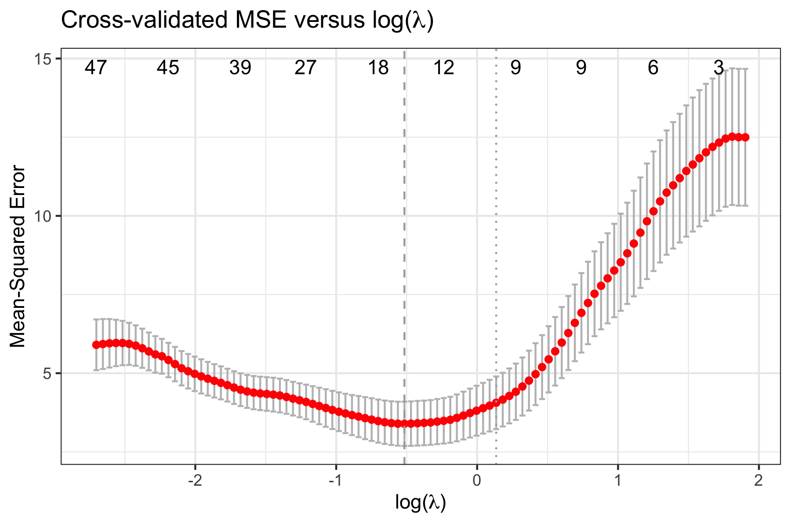
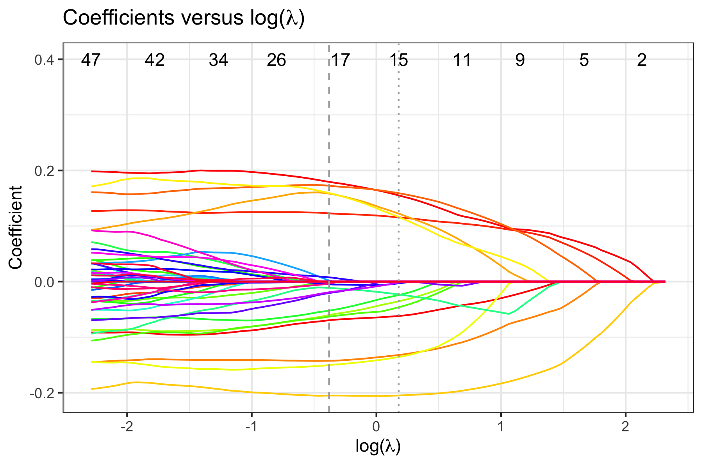

The FLORAL package is an open-source computational tool to perform log-ratio lasso regression modeling and compositional feature selection for continuous, binary, time-to-event, and competing risk outcomes. The proposed method adapts the augmented Lagrangian algorithm for a zero-sum constraint optimization problem while enabling a two-stage screening process for extended false-positive control.
The associated article for FLORAL is available on Cell Reports Methods.
System requirements and installation
The current version of FLORAL (0.5.0) was built in R version 4.4.2. R package dependencies can be found in the DESCRIPTION file.
You can install FLORAL with the following code. The installation is typically complete within minutes.
install.packages("FLORAL")You can also install FLORAL using conda:
You can install the development version of FLORAL from GitHub with:
# install.packages("devtools")
devtools::install_github("vdblab/FLORAL")Example
Here is a toy example for linear regression with 10-fold cross-validation for a simulated data with 50 samples and 100 compositional features. Option progress=TRUE can be used to show the progress bar of the running algorithm.
The data simulation procedure is described in the preprint. The expected run time for the following demo is about a minute.
set.seed(23420)
library(FLORAL)
dat <- simu(n=50,p=100,model="linear")
fit <- FLORAL(dat$xcount,dat$y,family="gaussian",ncv=10,progress=FALSE)To view plots of cross-validated prediction error and parameter coefficients, use fit$pmse or fit$pcoef:

To view selected compositional features, use fit$selected.feature, where features are sorted by their names. Features under min and 1se correspond to penalty parameter and , respectively. Features under min.2stage and 1se.2stage are obtained after applying 2-stage filtering based on features under min and 1se, respectively.
We recommend interpreting the selected compositional features as potential predictive markers to the outcome in the regression model in the sense that the cross-validated prediction error is improved by considering these selected features.
fit$selected.feature
#> $min
#> [1] "taxa1" "taxa10" "taxa15" "taxa2" "taxa29" "taxa3" "taxa39" "taxa43"
#> [9] "taxa5" "taxa6" "taxa7" "taxa8" "taxa9" "taxa92"
#>
#> $`1se`
#> [1] "taxa1" "taxa10" "taxa2" "taxa3" "taxa39" "taxa5" "taxa6" "taxa7"
#> [9] "taxa8" "taxa9"
#>
#> $min.2stage
#> [1] "taxa1" "taxa10" "taxa2" "taxa3" "taxa43" "taxa5" "taxa6" "taxa7"
#> [9] "taxa8" "taxa9" "taxa92"
#>
#> $`1se.2stage`
#> [1] "taxa1" "taxa10" "taxa2" "taxa3" "taxa5" "taxa6" "taxa7" "taxa8"
#> [9] "taxa9"To get specific log-ratios selected by the 2-stage procedure, use fit$step2.log-ratios, where min and 1se display the log-ratios between features. For each identified ratio, min.idx and 1se.idx return the column indices in the original input matrix for the two corresponding features forming the ratio.
fit$step2.ratios
#> $min
#> [1] "taxa1/taxa10" "taxa2/taxa5" "taxa3/taxa8" "taxa5/taxa8"
#> [5] "taxa6/taxa9" "taxa7/taxa92" "taxa10/taxa43"
#>
#> $`1se`
#> [1] "taxa1/taxa10" "taxa2/taxa5" "taxa3/taxa8" "taxa5/taxa8" "taxa6/taxa9"
#> [6] "taxa7/taxa10"
#>
#> $min.idx
#> [,1] [,2] [,3] [,4] [,5] [,6] [,7] [,8]
#> [1,] NA 1 2 3 5 6 7 10
#> [2,] NA 10 5 8 8 9 92 43
#>
#> $`1se.idx`
#> [,1] [,2] [,3] [,4] [,5] [,6] [,7]
#> [1,] NA 1 2 3 5 6 7
#> [2,] NA 10 5 8 8 9 10More detailed interpretations can be obtained for the selected log-ratios. First, the selected log-ratios also improve the cross-validated prediction errors because these log-ratios are derived from the constrained lasso estimate. Moreover, as guided by the association table between log-ratios and the outcome, it is possible to interpret the directions of the covariate effects associated with certain log-ratios on the outcome. To view detailed associations between selected log-ratios and the outcome, use fit$step2.tables to print summary tables for the multivariable stepwise regression models obtained by the 2-stage procedure.
fit$step2.tables$min
fit$step2.tables$`1se`For binary and survival outcomes, please specify family="binomial", family="cox", or family="finegray" accordingly.
dat.bin <- simu(n=50,p=100,model="binomial")
fit.bin <- FLORAL(dat.bin$xcount,dat.bin$y,family="binomial",ncv=10,progress=FALSE)
dat.cox <- simu(n=50,p=100,model="cox")
fit.cox <- FLORAL(dat.cox$xcount,survival::Surv(dat.cox$t,dat.cox$d),family="cox",ncv=10,progress=FALSE)
dat.fg <- simu(n=50,p=100,model="finegray")
fit.fg <- FLORAL(dat.cox$xcount,survival::Surv(dat.cox$t,dat.cox$d,type="mstate"),family="finegray",ncv=10,progress=FALSE,step2=FALSE)Repository for Reproducibility
Reproducible code for the analyses results reported in the manuscript can be found at this repository.
Contributing
The FLORAL package is jointly managed by MSKCC Biostatistics service and the Marcel van den Brink Lab. Please note that the FLORAL project is released with a Contributor Code of Conduct. By contributing to this project, you agree to abide by its terms. Thank you to all contributors!
Reference
Fei T, Funnell T, Waters NR, Raj SS, Baichoo M, Sadeghi K, Dai A, Miltiadous O, Shouval R, Lv M, Peled JU, Ponce DM, Perales MA, Gönen M, van den Brink MRM. Scalable log-ratio lasso regression for enhanced microbial feature selection with FLORAL, Cell Reports Methods (2024), 100899; doi: https://doi.org/10.1016/j.crmeth.2024.100899. Epub 2024 Nov 7. PMID: 39515336; PMCID: PMC11705925.